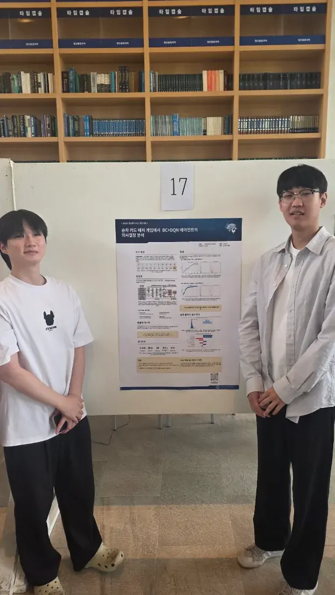
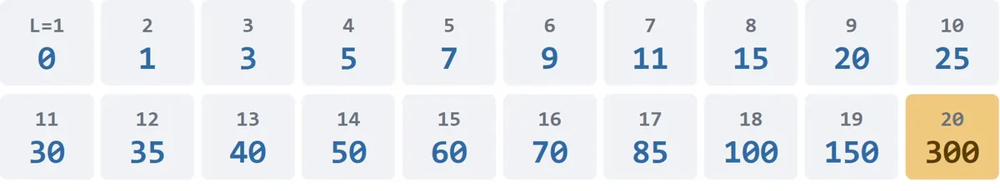
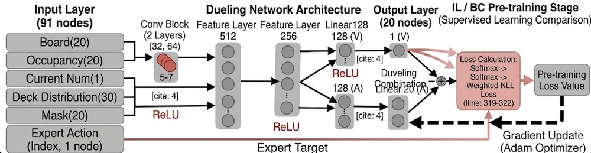
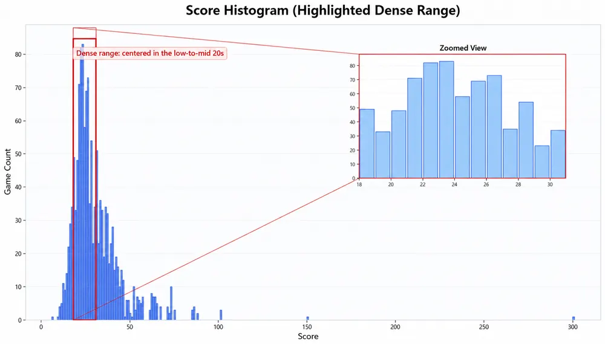
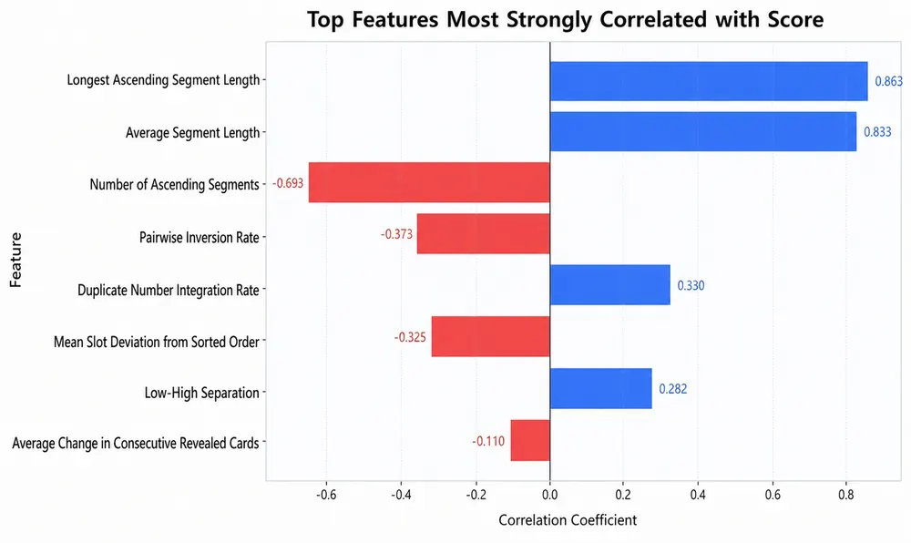
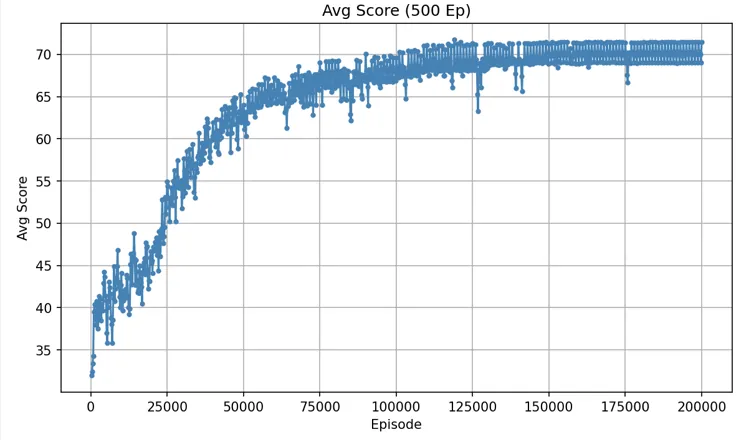
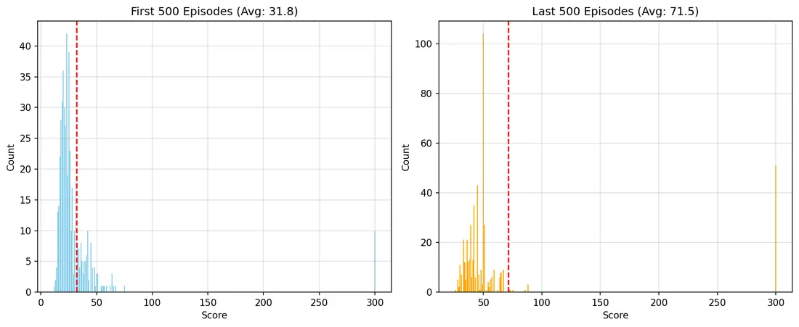
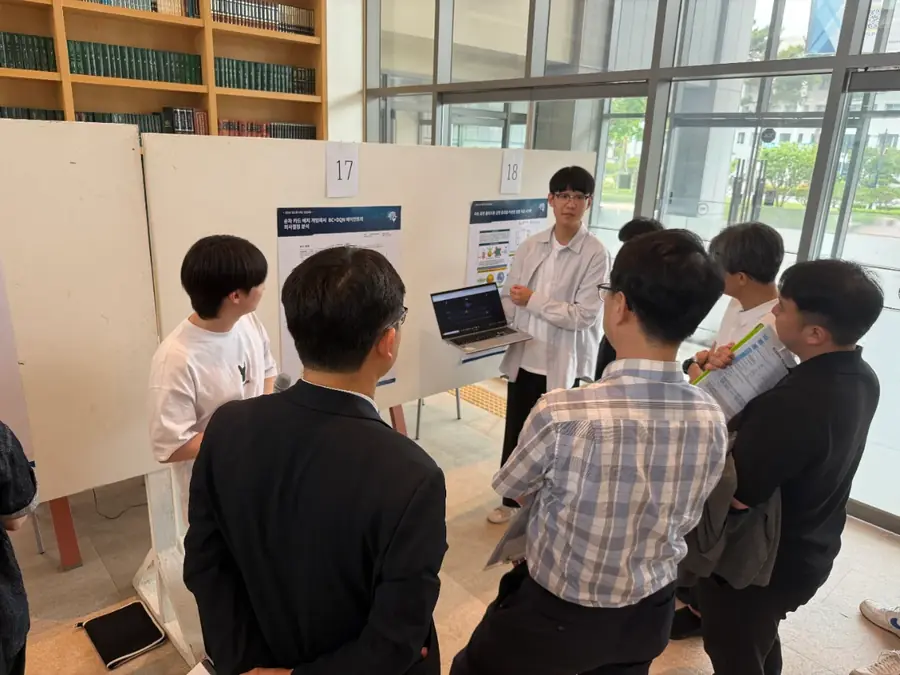

배경
평소 게임을 매우 즐겨 하기에 게임을 직접 컴퓨터로 구현해 보고 싶었고, 마침 AI를 공부하고 있었기에 둘을 결합해 연구를 시작했습니다.
강화학습에 모방학습(사람 플레이 데이터)을 더한 에이전트와 사람이 직접 대결할 수 있는 PVE 보드게임입니다.
02 / 프로젝트 개요
캡스톤디자인 연구 주제를 정하며 가장 하고 싶었던 것은 게임과 AI를 결합한 연구였습니다. 목표는 하나였습니다. 규칙을 외운 기계가 아니라, 정말 사람처럼 전략을 세우고 상황에 따라 판단하며 보드게임을 플레이하는 에이전트를 만드는 것.

03 / 진행한 일
평소 게임을 매우 즐겨 하기에 게임을 직접 컴퓨터로 구현해 보고 싶었고, 마침 AI를 공부하고 있었기에 둘을 결합해 연구를 시작했습니다.
스트림스는 경우의 수가 굉장히 많은 게임입니다. 게다가 예외 상황이 너무 많아 “이럴 땐 이렇게”라는 규칙을 일일이 지정하는 방식은 애초에 불가능했습니다.
예외 상황을 지정하지 않아도 되는 강화학습을 베이스로, 에이전트가 스스로 규칙과 상황별 노하우를 익히도록 했습니다. 다만 강화학습만으로는 성능이 만족스럽지 않아, 실제 유저의 플레이 데이터를 활용한 모방학습을 앙상블했습니다.

04 / 과정
보드의 모든 칸(1~20)을 끊기지 않는 하나의 오름차순으로 연결하는 전략.
고득점에 유효하지만 실패하면 저점이 매우 낮습니다.
일부 칸을 버리는 공간으로 정해두고, 원하지 않는 숫자는 더미로 빼며 메인 공간의 오름차순만 지키는 전략.
일정 점수는 안정적으로 얻지만 변동 폭이 좁아 고득점이 어렵습니다.
두 전략으로 각각 에이전트를 나누어 연구한 끝에, 강화학습은 각 상황에서 학습한 최선의 선택을 하므로 어느 정도의 저점이 이미 보장된다는 점에 주목했습니다. 그렇다면 에이전트에게 어울리는 방식은 고득점을 노려 승리를 추구하는 것 — Fullstream 전략을 채택했습니다.
05 / 결과물
D3QN 신경망 구조로 에이전트를 구성하고, 1차로 웹앱을 개발해 사람과 에이전트가 대결하는 PVE 게임을 배포했습니다. 여기서 수집한 실제 플레이 데이터로 추가 모방학습을 진행했습니다.



사람 데이터를 분석해 보니 사람들은 주로 Dummyspace 방식을 채용하지만, 평균 점수가 더 높은 방식은 Fullstream 전략이었습니다. 에이전트의 전략 선택이 데이터로 검증된 순간입니다.
모방학습에는 아무 데이터나 쓰지 않았습니다. 40점 이상의 유의미한 고득점 플레이만 선별해 학습을 진행했습니다.
06 / 성과



07 / 나의 역량
게임은 만들어서 유저가 플레이하는 순간 완성되는 것이 아니라, 유저와 함께 완성해 가는 것임을 배웠습니다. 배포 후 쏟아진 유저들의 의견과 즉각적인 피드백에 따라 게임의 완성도가 크게 달라지는 것을 직접 체감했습니다.
또 하나. 시뮬레이션 결과, 실제 플레이 결과, 통계상의 결과에서 체감되는 에이전트의 성능이 모두 달랐습니다. 에이전트는 활용 환경마다 따로 평가되어야 하며, 성능을 끌어올리려면 어떤 환경의 영향이 가장 큰지부터 알아야 한다는 것. 게임 AI 엔지니어로서 이 감각을 가지고 개발에 기여하겠습니다.